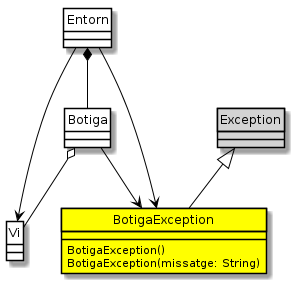

Exercici 35_09. Excepcions a la botiga de vins
Exercici 35_09. Excepcions a la botiga de vins
Context
Carpeta de lliurament:
35_09_botiga_excepcional/Continguts relacionats: Excepcions
Com lliurar-lo: instruccions
[✓] Exercici amb autoavaluació
Enunciat
La nostra aplicació està funcionant força bé. La Sra. Estrella està
contenta i ha començat a provar-la amb els seus clients. El Tomet no està
tant content perquè li ha tocat anar introduint tots els vins a
botiga.csv però, com dirien els savis "averestudiao".
Ara que tenim un moment de descans, és un bon moment per millorar el nostre codi.
Un dels punts febles del codi és la gestió d'errors. En concret, la classe
Botiga fa un cert abús del retorn de null cada cop que troba un
error. Alguns errors pot ser raonable gestionar-los així però d'altres
definitivament no.

Diagrama de l'aplicació
Aquests són els errors que haurem de controlar amb excepcions a partir d'ara:
el constructor
Botiga(int maxVins), en comptes de posar el valor per defecte, llençarà una excepcióIllegalArgumentExceptionquan se li passi un valor menor que 1.El missatge que inclourà a l'excepció serà:
"No es pot crear una botiga amb menys d'un vi".el mètode
Botiga.cerca(String)llençarà l'excepcióIllegalArgumentExceptionquan rebi el valornullcom a valor. El missatge serà"La referència no pot ser null".el mètode
Botiga.cerca(Vi)llençarà l'excepcióIllegalArgumentExceptionquan rebi el valornullcom a plantilla. El missatge serà"La plantilla no pot ser null".el mètode
Botiga.afegeix()llençarà l'excepcióIllegalArgumentExceptionquan rebi el valornullcom a vi a afegir. El missatge serà"El vi no pot ser null".el mètode
Botiga.afegeix()llençarà l'excepcióIllegalArgumentExceptionquan rebi un vi no vàlid. El missatge serà"El vi ha de ser vàlid".el mètode
Botiga.afegeix()llençarà l'excepcióIllegalArgumentExceptionquan rebi una instància de vi amb una referència que ja existeixi a la botiga. El missatge serà"Referència de vi repetida".el mètode
Botiga.afegeix()llençarà l'excepcióBotigaExceptionquan la botiga estigui plena. Es tracta d'una nova excepció que hem de crear, que heretarà directament deExceptioni que oferirà un constructor específic per determinar el missatge, i un per defecte que establirà com a missatge"Botiga plena".el mètode
Botiga.elimina()llençarà l'excepcióIllegalArgumentExceptionquan rebi el valornull, amb el missatge"La referència no pot ser null".el mètode
Botiga.elimina()llençarà l'excepcióIllegalArgumentExceptionquan es demani un vi que no sigui a la botiga, amb el missatge"La instància a eliminar ha d'estar present".el mètode
Botiga.elimina()llençarà l'excepcióIllegalArgumentExceptionquan es demani un vi que tingui estoc, amb el missatge"El vi a eliminar no pot tenir estoc".
Com que alguns d'aquests mètodes generaran excepcions gestionades, caldrà
modificar el codi de Entorn.
En carregar els vins guardats a botiga.csv, si es troba que hi ha
massa, Entorn mostrarà el missatge "ERROR: massa entrades a
botiga.csv" i permetrà treballar amb els vins que s'hagin pogut
carregar.
De moment ens quedarem aquí, doncs l'objectiu no és tant ser exhaustius com començar a introduir el mecanisme d'excepcions a la nostra aplicació.